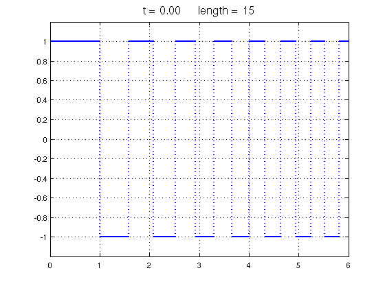
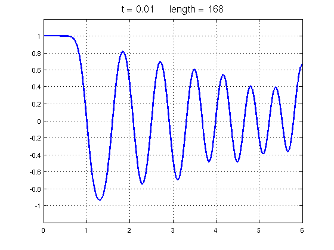
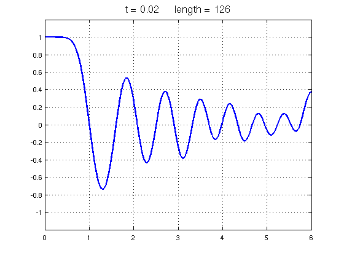
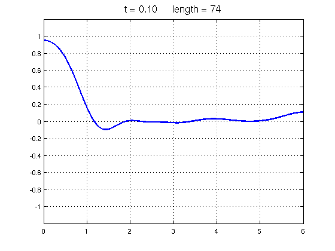

Heat equation via EXPM
Nick Trefethen, October 2010
(Chebfun example pde/Erosion.m)
A well-known PDE problem is the heat equation initial boundary-value problem posed for x in [a,b] and t > 0,
u_t = u_xx, u(x,0) = u0(x)
with suitable boundary conditions. We can regard this as a time-dependent linear process
u_t = Lu
where L is the operator d^2/dx^2 on [a,b] with the same boundary conditions. The solution is
u(t) = e^(tL) u(0).
In Chebfun we can implement this idea using the EXPM command to compute the operator exponential. Here is an example with Neumann boundary conditions on the interval [0,6]. We start with quite an irregular initial function.
d = [0,6]; u0 = chebfun(@(x) sign((-1).^floor(x.^1.5)),d,'splitting','on'); LW = 'linewidth'; lw = 2; FS = 'fontsize'; fs = 16; clf, plot(u0,LW,lw), grid on title(sprintf('t = %4.2f length = %d',0,length(u0)),FS,fs) ax = [0 6 -1.2 1.2]; axis(ax)
Here's the solution at t = 0.01. Notice that the narrower spikes have lost more amplitude than the wider ones. The warning message is important: Chebfun does not always give its full accuracy for computations of this kind.
L = chebop(d); % operator on domain [0,6] L.op = @(u) diff(u,2); % 2nd-derivative operator L.lbc = @(u) diff(u); % Neumann BC at left L.rbc = @(u) diff(u); % Neumann BC at right dt = 0.01; expmL = expm(dt*L); % exponential of the operator u = expmL*u0; plot(u,LW,lw), axis(ax), grid on title(sprintf('t = %4.2f length = %d',0.01,length(u)),FS,fs) figure
Warning: Nonsmooth initial data may degrade accuracy in the result.
Here is the solution at t = 0.02. Now that the function is smooth, there are no further warning messages. The rightmost maximum has extra amplitude, since it effectively corresponded to a wider initial spike thanks to the Neumann boundary condition.
u = expmL*u; plot(u,LW,lw), axis(ax), grid on title(sprintf('t = %4.2f length = %d',0.02,length(u)),FS,fs) figure
At t = 0.1, there is not much of the original structure left. The length of the chebfun has also been reduced.
u = expm(0.08*L)*u; plot(u,LW,lw), axis(ax), grid on title(sprintf('t = %4.2f length = %d',0.1,length(u)),FS,fs)